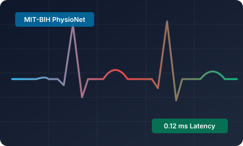
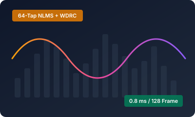
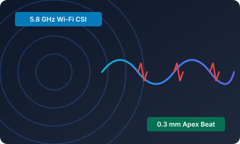

I am an Electrical and Telecommunications Engineer specializing in Digital Signal Processing (DSP), TinyML, and Resource-Constrained Embedded Systems. My research bridges statistical signal processing theory with deterministic, zero-allocation ANSI C99 firmware execution on bare-metal architectures (ARM Cortex-M and low-power IoT microcontrollers).
My core technical focus centers on formulating energy-efficient telemetry pipelines for healthcare wearables and wireless cyber-physical sensing. This includes non-distorting zero-phase IIR/FIR filter chains, real-time Pan-Tompkins QRS morphological tracking, closed-loop adaptive acoustic filtering (NLMS) for hearing assistive devices, non-contact cardiopulmonary RF sensing via Wi-Fi CSI phase sanitization, and sub-Nyquist Compressive Sensing (CS) with Orthogonal Matching Pursuit (OMP) sparse recovery.
Peer-reviewed manuscript, experimental benchmarks, and open-source artifacts

An ultra-low-latency (0.12 ms/beat) DSP and TinyML edge telemetry pipeline combining forward-backward zero-phase IIR conditioning, Pan-Tompkins QRS morphological detection, Welch LF/HF spectral HRV decomposition, and a 16.3 KB zero-malloc ANSI C99 static decision forest.
, Low-Latency Deterministic Arrhythmia Telemetry via Zero-Phase IIR Filtering and Static Decision Forests on Resource-Constrained Edge Microcontrollers, ResearchGate Preprint, Oct. 2026.
Open-source signal processing architectures, firmware headers, and interactive dashboards

Clinical acoustic DSP engine with 64-tap adaptive NLMS feedback cancellation, spectral subtraction, and NAL-R WDRC compression (<10 ms budget).

Wireless cardiopulmonary monitoring extracting 0.3 mm chest apex beat from 5.8 GHz RF phase shifts & Wi-Fi CSI with CFO regression & dual-band IIR.
Research publications, engineering portfolio, and academic curriculum vitae
Electrical & Telecommunications Engineering Researcher
Digital Signal Processing (DSP) & TinyML Systems